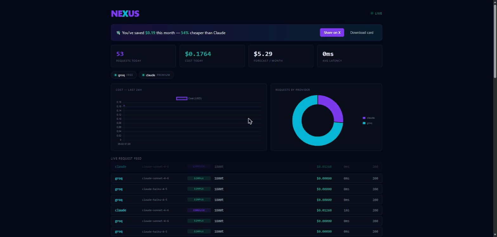

curl -fsSL https://raw.githubusercontent.com/lynuxis2026-pixel/nexus-proxy/main/install.sh | shirm https://raw.githubusercontent.com/lynuxis2026-pixel/nexus-proxy/main/install.ps1 | iexnexus start --cascade --redact --semantic-cache
Classifies each request and sends it to the cheapest model that can handle it. Free tiers first, Claude for the hard stuff.
Tries the cheapest capable model first, verifies the output, and escalates to Claude only when it fails. Real savings, with a safety net.
Masks API keys, secrets and PII before a request ever leaves for a third-party model — restored transparently in the response.
Click any request to see the full prompt and response, then replay it against another provider to compare cost and output.
Identical requests are instant and free; an opt-in semantic layer also serves near-identical prompts. Rate-limited tiers fail over automatically.
Captures provider prompt-cache tokens and shows your true, cache-discounted spend — plus a live "cache saved $X".
Speaks both the Anthropic and OpenAI APIs, so Claude Code, Cursor, aider, Cline and any SDK route through one proxy.
Round-robin across multiple free keys with automatic 429 cooldown, so free tiers behave like one big quota.
nexus topEvery request, model, latency and cost in real time — in the browser, or a dependency-free terminal TUI.
nexus doctor tests every provider and auto-discovers keys from your environment, so nexus start just works.
Set a daily limit; once hit, NEXUS uses only free/local models for the rest of the day.
One Go binary, pure-Go SQLite. No Python, no Docker. curl | sh and go.
~$120/mo on Claude → ~$8/mo with NEXUS